Som un grup d’enginyers i profesionals amb una amplia experiència en la millora i optimització de les operacions a la Supply -chain.
La nostra àrea d’especialitat està centrada en el camp de: Direcció d’operacions, Controlling Industrial, control pressupostari, millora de l’eficiència i la productivitat, packaging engineering, planificació, logística i benchmarking, aconseguida a través de l’experiència laboral a les diferents Supply Chains de Henkel.
Us oferim la nostra visió objectiva y la nostra capacitat de síntesi per tal d’encara les situacions complexes que planteja la Supply Chain.
Clarificar i sintetitzar la realitat, identificar les àrees de millora.
Nosaltres buscarem la millor solució per tal de millorar significativament la rendibilitat de les operacions.
La Nostra col·laboració
Doni’ns la oportunitat de treballar i compartir amb vostè la nostra experiència per tal de trobar la millor solució per assolir l’optimització dels seus processos i la seva rendibilitat.
La Nostra metodologia de treball es la següent:

Primer pas
Tenir una reunió preliminar amb vostè i els seu personal responsable de cara a rebre una primera informació de l’àrea de millora en la que centrar-nos.

Segon pas
En una fase següent treballaríem inicialment dins la seva organització amb el seu personal responsable de cara a identificar y definir la situació actual.
Elaborar la necessària recollida de dades que serà la base de la futura avaluació de la seva organització y acordar amb vostè el tipus de dades i la manera d’aconseguir-los.

Tercer pas
Definir escenari i alternatives a fi efecte de proposar iniciatives a la Direcció encaminades a millorar la productivitat global i la rendibilitat de la Companyia.
D’acord amb els escenaris seleccionats i les alternatives plantejades, treballar amb els seus enginyers i managers de cara a implementar els projectes seleccionats i aconseguir els estalvis calculats dins del terminis definits. D’acord amb.